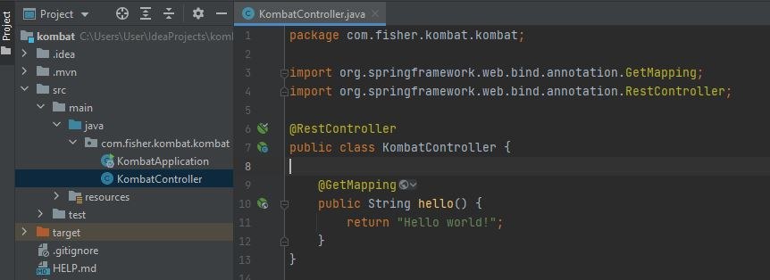

Причины создания Spring Boot. Чем неугодил Spring Framework?
Из-за громоздкой конфигурации зависимостей настройка Spring для корпоративных приложений превратилась в весьма утомительное и подверженное ошибкам занятие. Особенно это относится к приложениям, которые используют также несколько сторонних библиотек
Каждый раз, создавая очередное корпоративное Java-приложение на основе Spring, вам необходимо повторять одни и те же рутинные шаги по его настройке:
- В зависимости от типа создаваемого приложения (Spring MVC, Spring JDBC, Spring ORM и т.д.) импортировать необходимые Spring-модули
- Импортировать библиотеку web-контейнеров (в случае web-приложений)
- Импортировать необходимые сторонние библиотеки (например, Hibernate, Jackson), при этом вы должны искать версии, совместимые с указанной версией Spring
- Конфигурировать компоненты DAO, такие, как: источники данных, управление транзакциями и т.д.
- Конфигурировать компоненты web-слоя, такие, как: диспетчер ресурсов, view resolver
- Определить класс, который загрузит все необходимые конфигурации
Магия Spring Boot
Авторы Spring решили предоставить разработчикам некоторые утилиты, которые автоматизируют процедуру настройки и ускоряют процесс создания и развертывания Spring-приложений, под общим названием Spring Boot
Цель: упрощение создания приложений на основе Spring. Spring Boot позволяет наиболее простым способом создать web-приложение, требуя от разработчиков минимум усилий по его настройке и написанию кода
Особенности Spring Boot
Spring Boot обладает большим функционалом, но его наиболее значимыми особенностями являются: управление зависимостями, автоматическая конфигурация и встроенные контейнеры сервлетов
Простота управления зависимостями
Чтобы ускорить процесс управления зависимостями, Spring Boot неявно упаковывает необходимые сторонние зависимости для каждого типа приложения на основе Spring и предоставляет их разработчику посредством так называемых starter-пакетов (spring-boot-starter-web, spring-boot-starter-data-jpa и т.д.)
Starter-пакеты представляют собой набор удобных дескрипторов зависимостей, которые можно включить в свое приложение. Это позволит получить универсальное решение для всех, связанных со Spring технологий, избавляя программиста от лишнего поиска примеров кода и загрузки из них требуемых дескрипторов зависимостей (пример таких дескрипторов и стартовых пакетов будет показан ниже)
Например, если вы хотите начать использовать Spring Data JPA для доступа к базе данных, просто включите в свой проект зависимость spring-boot-starter-data-jpa и все будет готово (вам не придется искать совместимые драйверы баз данных и библиотеки Hibernate)
Если вы хотите создать Spring web-приложение, просто добавьте зависимость spring-boot-starter-web, которая подтянет в проект все библиотеки, необходимые для разработки Spring MVC-приложений, таких как spring-webmvc, jackson-json, validation-api и Tomcat
Другими словами, Spring Boot собирает все общие зависимости и определяет их в одном месте, что позволяет разработчикам просто использовать их, вместо того, чтобы изобретать колесо каждый раз, когда они создают новое приложение. Следовательно, при использовании Spring Boot, файл pom.xml содержит намного меньше строк, чем при использовании его в Spring-приложениях
Автоматическая конфигурация
Второй превосходной возможностью Spring Boot является автоматическая конфигурация приложения.
После выбора подходящего starter-пакета, Spring Boot попытается автоматически настроить Spring-приложение на основе добавленных вами jar-зависимостей.
Например, если вы добавите Spring-boot-starter-web, Spring Boot автоматически сконфигурирует такие зарегистрированные бины, как DispatcherServlet, ResourceHandlers, MessageSource
Если вы используете spring-boot-starter-jdbc, Spring Boot автоматически регистрирует бины DataSource, EntityManagerFactory, TransactionManager и считывает информацию для подключения к базе данных из файла application.properties
Если вы не собираетесь использовать базу данных, и не предоставляете никаких подробных сведений о подключении в ручном режиме, Spring Boot автоматически настроит базу в памяти, без какой-либо дополнительной конфигурации с вашей стороны (при наличии H2 или HSQL библиотек)
Встроенная поддержка сервера приложений — контейнера сервлетов
Каждое Spring Boot web-приложение включает встроенный web-сервер. Посмотрите на список контейнеров сервлетов, которые поддерживаются "из коробки".
Разработчикам теперь не надо беспокоиться о настройке контейнера сервлетов и развертывании приложения на нем. Теперь приложение может запускаться само, как исполняемый jar-файл с использованием встроенного сервера
Создание Spring Boot Rest API приложения
- Для того чтобы сгенерировать стурктуру каталогов и на старте указать все необходимые зависимости у нас есть несколько вариантов как это сделать:
на сайте spring initializr/ или прямо в IDEA, выбрав меню Spring initializr и указав необходимые стартер-пакеты.
Так как у нас будет RestApi приложение добавляем Spring WEB (он же Spring-boot-starter-web - Далее мы получим сгенерированный проект, со всеми необходимыми зависимостями.
- Напишем простой RestController который будет нам отдавать Hello World 
- После чего запускаем приложение. Незаметно для нас поднимется tomcat-сервер, который начнет слушать запросы. И перейдя по адресу http://localhost:8080 мы увидим ответ нашего контроллера